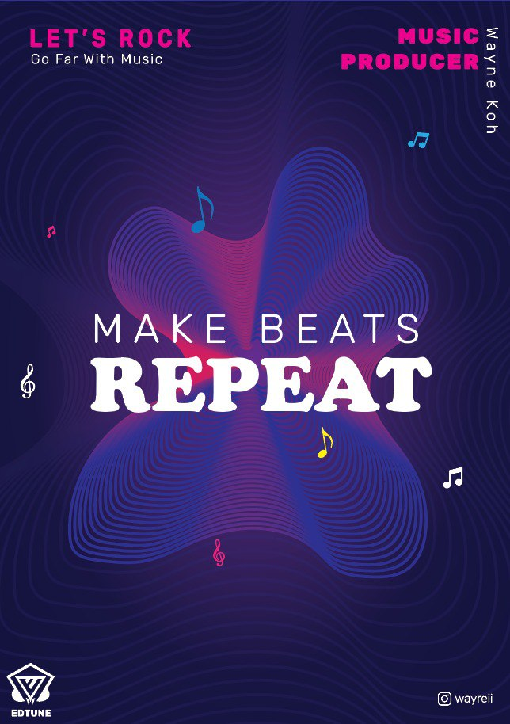

Music Poster
Description:
In my poster, I started with the background and made the lines which show repeatedly as the "sound wave". I also added
music notes around it so that people will know with a look that my poster is about music, which gets the message out there.
My logo and brand name is at the bottom, along with my socials if some viewer might want to reach out to me.
I have also added Let's Rock, and a phrase "Go far with Music". This message tells the user that we are going to do this
together, while also doing more with music. I then added a slogan of "Make Beats Repeat", whereas the word 'Repeat' is bolded
which gives a contrast and an amphasis on the word itself.
The color scheme which i have used is a gradient of purple and pink, where it is towards a darker tone on the background.
The words are then white and pink, so it is viewable and not too striking for the background. I also try not to add too much
words around my poster, so as to give some space to it and not make it overwhwelming for the users when they are seeing this.
As for the sound wave, the foprm and shape of the lines represents music waves which getss the message to the users, as music
do have waves in it. I also make it more of an organic shape to show that music can be of any shape or form of your choice.
Typography Used:
- Rubik
- Cooper Black